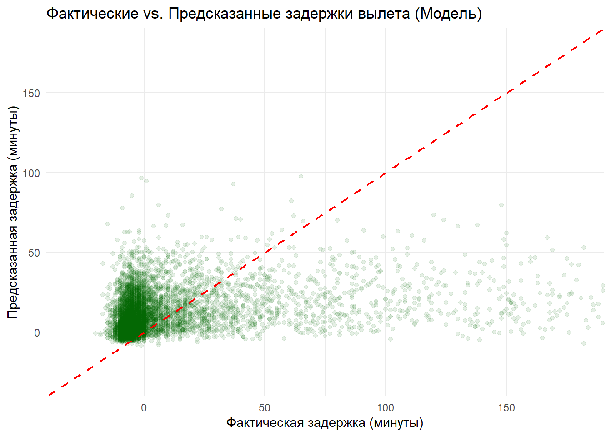

Code
library(nycflights23)
library(dplyr)
library(ggplot2)
library(ggsci)
library(lubridate)
library(tidyverse)
library(hrbrthemes)
library(ranger)В статье применяются методы анализа данных с помощью языка программирования R и технической системы Quarto для закрепления навыков, предусмотренные в курсе “Большие данные и аналитика”.
Краткая информация о датасете, над которым проводится анализ: В апреле 2025 года появился новый датасет “nycflights23”. Он почти идентичен другому датасету “nycflights13” (данные о рейсах авиалиний в Нью-Йорке 2013 года). Различие состоит в “свежести” данных с разницей 10 лет, что делает такой анализ данных более актуальным.
Для начала работы стоит составить цель и задачи анализа данных, чтобы ориентироваться на них при исследовании. Цель: проанализировать данные, составить выводы. Первичные задачи: Выявить зависимости задержек по авиакомпаниям, загруженность в зависимости от времени суток, предсказание задержки вылета и прибытия рейсов.
Загрузка необходимых библиотек:
library(nycflights23)
library(dplyr)
library(ggplot2)
library(ggsci)
library(lubridate)
library(tidyverse)
library(hrbrthemes)
library(ranger)Код выводит авиакомпании, выводя лидера по задержке рейсов.
# Расчёт средней задержки при вылете и прилёте для каждой авиакомпании
data <- flights |>
group_by(carrier) |>
summarise(
avg_dep_delay = mean(dep_delay, na.rm = TRUE),
avg_arr_delay = mean(arr_delay, na.rm = TRUE),
flight_count = n()
) |>
arrange(desc(avg_arr_delay))
data <- data |>
left_join(airlines, by = "carrier")
# Просмотр топ-10 авиакомпаний с наибольшей средней задержкой при прилёте
head(data, 14)# A tibble: 14 × 5
carrier avg_dep_delay avg_arr_delay flight_count name
<chr> <dbl> <dbl> <int> <chr>
1 F9 35.7 26.2 1286 Frontier Airlines Inc.
2 HA 22.9 21.4 366 Hawaiian Airlines Inc.
3 B6 23.8 15.6 66169 JetBlue Airways
4 OO 19.8 13.7 6432 SkyWest Airlines Inc.
5 NK 18.2 9.89 15189 Spirit Air Lines
6 UA 17.6 9.04 79641 United Air Lines Inc.
7 WN 16.1 5.76 12385 Southwest Airlines Co.
8 AA 14.2 5.27 40525 American Airlines Inc.
9 DL 15.1 1.64 61562 Delta Air Lines Inc.
10 MQ 10.5 0.119 357 Envoy Air
11 AS 12.0 0.0844 7843 Alaska Airlines Inc.
12 9E 7.44 -2.23 54141 Endeavor Air Inc.
13 YX 4.21 -4.64 88785 Republic Airline
14 G4 3.98 -5.88 671 Allegiant Air Судя по результату, средняя задержка рейсов от авиакомпании Frontier Airlines Inc. занимает самое высокое положение среди рейсов от других авиакомпаний.
Дальше создается график для отображения данных результатов: средние задержки рейсов разных авиакомпаний с различными кол-вами рейсов.
ggplot(data, aes(x = avg_dep_delay, y = avg_arr_delay,
color = name, size = flight_count)) +
geom_point(alpha = 0.6) +
theme_bw() +
labs(
color = "Авиакомпания",
size = "Счётчик\nрейсов",
x = "Средняя задержка вылета (мин)",
y = "Средняя задержка прилёта (мин)",
title = "Средние задержки по авиакомпаниям"
) +
scale_color_d3(palette = "category20") +
scale_size_continuous(range = c(2, 10), breaks = c(5000, 10000, 20000, 40000)) +
theme(
legend.position = "bottom",
legend.box = "vertical",
legend.title = element_text(size = 7),
legend.text = element_text(size = 6)
)
Как и в таблице-топе авиакомпания Frontier Airlines Inc. также содержит наибольшое количество средних задерживаемых минут, но она содержит не большое количество рейсов, судя по размеру точки на графике, которая зависит от числа рейсов определенной компании.
Далее создаётся график задержек рейсов различных авиакомпаний по месяцам, чтобы узнать ситуацию на все месяца.
monthly_delays <- flights |>
left_join(airlines, by = "carrier") |>
group_by(month) |>
summarise(
avg_dep_delay = mean(dep_delay, na.rm = TRUE),
avg_arr_delay = mean(arr_delay, na.rm = TRUE),
carrier,
name
)
# График средней задержки по месяцам
ggplot(monthly_delays, aes(x = month)) +
geom_line(aes(y = avg_dep_delay, color = "Вылет")) +
geom_line(aes(y = avg_arr_delay, color = "Прибытие")) +
facet_wrap(~name) +
labs(
title = "Средняя задержка по месяцам (2023)",
x = "Месяц",
y = "Средняя задержка (мин)",
color = "Тип задержки") +
scale_x_continuous(breaks = 1:12) +
theme_minimal()
Судя по “графикам”, все компании, кроме одного, имеют одинаковую динамику средней задержки в зависимости от месяца. Месяц, когда происходит пик по задержке рейсов - это сентябрь (7-й месяц).
Рейсы от авиакомпании Envoy Air имеют отличную от рейсов других компаний структуру динамики задержек. Например, самый пик происходит в двух месяцев: май и ноябрь.
У всех компаний с одинаковой динамикой больше задержек вылета, чем прибытия.
Далее идет подготовка данных к графику, показывающий зависимость задержек от времени дня.
# Подготовка данных
flights_hourly <- flights |>
left_join(airlines, by = "carrier") |>
mutate(hour_dep = floor(dep_time / 100)) |>
filter(!is.na(hour_dep), !is.na(dep_delay), !is.na(arr_delay)) |>
group_by(name, hour_dep) |>
summarise(
avg_dep_delay = mean(dep_delay, na.rm = TRUE),
avg_arr_delay = mean(arr_delay, na.rm = TRUE),
n = n(),
.groups = "drop"
)
# Долгий формат для визуализации
flights_long <- flights_hourly |>
pivot_longer(
cols = starts_with("avg_"),
names_to = "type",
values_to = "delay"
)Сам график:
ggplot(flights_long, aes(x = hour_dep, y = delay, color = type)) +
geom_line(size = 1) +
facet_wrap(~ name) +
labs(
title = "Средняя задержка по времени суток и авиакомпании",
x = "Час дня (вылет)",
y = "Средняя задержка (минуты)",
color = "Тип задержки"
) +
scale_color_manual(
values = c("avg_dep_delay" = "lightblue", "avg_arr_delay" = "pink"),
labels = c("Вылет", "Прибытие")
) +
theme_minimal() +
theme(
strip.text = element_text(face = "bold", size = 10),
legend.position = "bottom"
)
Ситуация стабильная в перспективе разницы вылета и прибытия: их линии динамики совпадают и редко и слабо расходятся в отдельнызх случаях.
Однако уже большая часть графиков отличается в плане динамики линий: в одних линия почти горизонтальная, а в других она сильно изгибается. Наблюдается тенденция, где пик линий динамик происходит в ранние часы дня, оппозиционо у разных компаний она происходит в разные части утренних часов.
Авиакомпания Frontier Airlines Inc. имеет самую динамичную линию из всех рейсов, то есть имеет больше всего роста и спада.
В этой секции мы построим модель машинного обучения для предсказания задержки вылета. Мы будем использовать облегченную версию подхода для быстрой демонстрации.
Определение функции предобработки данных для моделирования. Эта функция специально разработана для подготовки данных к моделированию, включая сэмплирование и преобразование признаков.
Создаем функцию preprocess_flights_data_for_model, которая стандартизирует процесс подготовки данных перед их использованием в модели машинного обучения. Функция включает сэмплирование данных, фильтрацию пропущенных значений и выбросов, создание новых признаков и преобразование категориальных переменных в формат, пригодный для моделирования.
preprocess_flights_data_for_model <- function(data, sample_fraction = 0.1) {
message("Начало предобработки данных для моделирования...")
# 1. Сэмплирование данных для ускорения
if (sample_fraction < 1) {
data <- data |> sample_frac(sample_fraction, replace = FALSE)
message(paste0("Используется подмножество данных (", round(sample_fraction*100), "% от оригинала): ", nrow(data), " строк."))
}
# 2. Базовая фильтрация отсутствующих значений для ключевых переменных
data <- data |>
filter(!is.na(dep_delay), !is.na(arr_delay), !is.na(air_time), !is.na(distance))
# 3. Умеренная фильтрация аномальных задержек (можно настроить)
data <- data |>
filter(dep_delay > -60, dep_delay < 240) # Задержки от -60 до 240 минут
# 4. Выбор и преобразование признаков
data <- data |>
mutate(
dep_hour = floor(sched_dep_time / 100),
flight_date = make_date(year, month, day),
day_of_week = wday(flight_date, label = TRUE)
) |>
select(dep_delay, month, day, dep_hour, day_of_week, carrier, origin, dest, distance, air_time) |>
na.omit()
# 5. Преобразование категориальных переменных в факторы
data <- data |>
mutate(
carrier = as.factor(carrier),
origin = as.factor(origin),
dest = as.factor(dest),
month = as.factor(month),
day = as.factor(day),
dep_hour = as.factor(dep_hour),
day_of_week = as.factor(day_of_week)
)
if (nlevels(data$dest) > 100) {
top_levels <- names(sort(table(data$dest), decreasing = TRUE)[1:100])
data$dest <- forcats::fct_other(data$dest, keep = top_levels, other_level = "Other")
}
if (nlevels(data$origin) > 5) {
top_levels <- names(sort(table(data$origin), decreasing = TRUE)[1:5])
data$origin <- forcats::fct_other(data$origin, keep = top_levels, other_level = "Other")
}
message(paste("Размер данных для моделирования:", nrow(data), "строк,", ncol(data), "столбцов"))
return(data)
}Подготовка данных для моделирования. Применяем функцию предобработки и разделяем данные на обучающую и тестовую выборки.
Применяем функцию предобработки к исходным данным и выбираем небольшую долю для анализа. Затем разделяем данные на обучающую и тестовую выборки в соотношении 70/30 для дальнейшего построения и оценки модели.
flights_model_data <- preprocess_flights_data_for_model(flights, sample_fraction = 0.05)
# Разделение данных на обучающую и тестовую выборки (70/30)
set.seed(42)
train_index_model <- sample(seq_len(nrow(flights_model_data)), size = floor(0.7 * nrow(flights_model_data)))
train_data_model <- flights_model_data[train_index_model, ]
test_data_model <- flights_model_data[-train_index_model, ]
message(paste("Размер обучающей выборки для модели:", nrow(train_data_model), "строк"))
message(paste("Размер тестовой выборки для модели:", nrow(test_data_model), "строк"))Построение модели предсказания
Строим модель предсказания задержки вылета, используя алгоритм случайного леса (Random Forest) на обучающей выборке. Конфигурируем модель с 100 деревьями и включаем расчет важности признаков.
message("Построение модели предсказания (Random Forest)...")
model_rf_prediction <- ranger(
dep_delay ~ .,
data = train_data_model,
num.trees = 100,
importance = "permutation",
seed = 123,
num.threads = parallel::detectCores() - 1
)
message("Модель построена.")Оценка производительности модели предсказания. Рассчитываем метрики MAE, RMSE и R-squared для оценки качества предсказаний модели.
Оцениваем качество предсказаний модели на тестовой выборке. Для этого рассчитываем ключевые метрики: MAE (средняя абсолютная ошибка), RMSE (корень из средней квадратичной ошибки) и R-squared (коэффициент детерминации).
predictions_model <- predict(model_rf_prediction, test_data_model)$predictions
# Расчет метрик
mae_model <- mean(abs(predictions_model - test_data_model$dep_delay))
rmse_model <- sqrt(mean((predictions_model - test_data_model$dep_delay)^2))
r_squared_model <- cor(predictions_model, test_data_model$dep_delay)^2
cat("\n### Метрики производительности модели предсказания на тестовой выборке:\n")
### Метрики производительности модели предсказания на тестовой выборке:cat(paste(" - **MAE:**", round(mae_model, 2), "минут\n")) - **MAE:** 20.95 минутcat(paste(" - **RMSE:**", round(rmse_model, 2), "минут\n")) - **RMSE:** 34.5 минутcat(paste(" - **R-squared:**", round(r_squared_model, 3), "\n")) - **R-squared:** 0.086 Визуализация предсказаний модели Визуализируем соответствие между фактическими и предсказанными значениями задержки вылета.
Визуализируем соответствие между фактическими и предсказанными значениями задержки вылета. Это позволяет наглядно оценить, насколько хорошо модель справляется с предсказанием.
df_prediction_results <- data.frame(
actual = test_data_model$dep_delay,
predicted = predictions_model
)
ggplot(df_prediction_results, aes(x = actual, y = predicted)) +
geom_point(alpha = 0.1, color = "darkgreen") + # Другой цвет для отличия
geom_abline(intercept = 0, slope = 1, color = "red", linetype = "dashed", size = 0.8) +
labs(title = "Фактические vs. Предсказанные задержки вылета (Модель)",
x = "Фактическая задержка (минуты)",
y = "Предсказанная задержка (минуты)") +
theme_minimal() +
coord_cartesian(xlim = c(-30, 180), ylim = c(-30, 180)) # Ограничим оси
message("Анализ предсказаний завершен.")